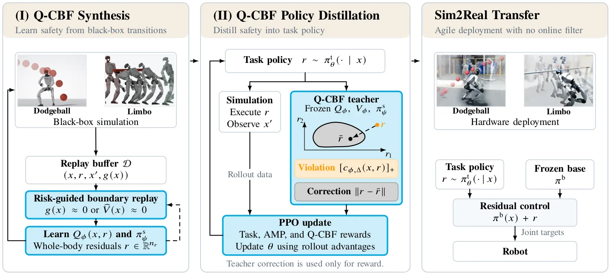
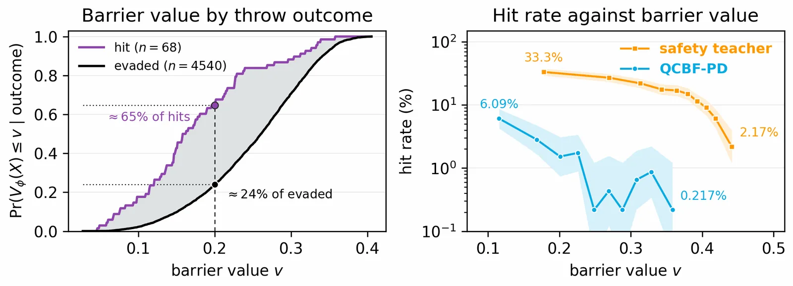
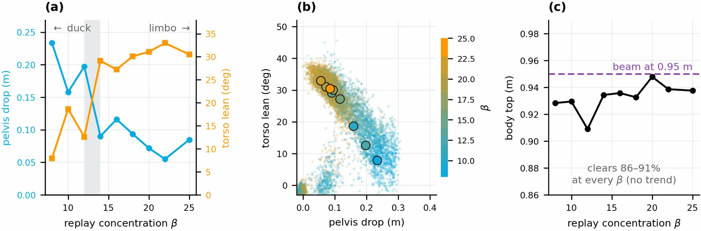

O problema: segurança em robôs complexos não escala
Robôs humanoides modernos têm dezenas de articulações e precisam coordenar equilíbrio, contato e dinâmica não linear para executar movimentos ágeis. Garantir segurança nesse cenário é difícil: um movimento que evita colisão pode desestabilizar o robô, criar contato em outra parte do corpo ou deixar o sistema em um estado irrecuperável. Segurança de corpo inteiro exige raciocinar sobre o sistema completo, não sobre subsistemas isolados.
Control Barrier Functions (CBFs) oferecem uma forma principiada de impor segurança ao restringir ações que preservam um conjunto seguro invariante. O problema central, porém, é a síntese da função de barreira. Abordagens clássicas dependem de barreiras analíticas projetadas para restrições específicas, conhecimento suficiente da dinâmica do sistema e, muitas vezes, representações simplificadas que omitem dinâmica relevante para movimentos ágeis. Essas barreiras exigem conhecimento especializado, informação geométrica privilegiada e escolhas cuidadosas de representação, tornando-as difíceis de escalar ou transferir entre tarefas.
Métodos baseados em aprendizado tentam contornar essas limitações. Q-CBFs elevam a barreira para o espaço estado-ação e aprendem uma função de valor de segurança que captura as consequências futuras de ações candidatas a partir de transições opacas do sistema. Dado um critério de falha baseado em estado, a Q-CBF identifica ações a partir das quais a segurança pode continuar a ser mantida. Outra linha de trabalho busca internalizar segurança na política de tarefa: CBF-RL incorpora uma CBF analítica no treinamento via rollouts filtrados e objetivos guiados por CBF, permitindo que a política satisfaça restrições sem precisar do filtro em tempo de execução.
Essas abordagens atacam partes complementares do problema: Q-CBFs aprendem o certificado de segurança mas têm sido usadas principalmente como filtros em tempo real; CBF-RL transfere segurança para a política mas depende de uma barreira analítica especificada a priori. Falta um framework que escale certificados de segurança aprendidos para controle de alta dimensão e depois destile essa estrutura de segurança em uma política de tarefa.
A ideia: aprender a barreira e ensinar a política
LIMBO (Learning and Internalizing Model-free Barrier Objectives) preenche essa lacuna. O framework tem dois estágios. No primeiro, sintetiza uma Q-CBF a partir de transições opacas do sistema e de uma especificação de falha baseada em estado. No segundo, usa o certificado aprendido como professor que fornece feedback de segurança no nível de ação, moldando o treinamento da política de tarefa para que ela internalize a segurança sem precisar de um filtro online durante a execução.
A formulação central é a Q-CBF residual: o certificado aprendido opera sobre ações residuais em torno de um controlador base congelado, que fornece estabilização nominal ou locomoção. Isso coloca o certificado no mesmo espaço de controle da política de tarefa e torna a síntese tratável na dimensão de controle completa, usando apenas transições opacas e uma especificação de falha baseada em estado. Durante a síntese, o valor de segurança aprendido guia amostragem próxima à fronteira estimada de recuperabilidade; durante o aprendizado de tarefa, serve como professor que fornece violações de Q-CBF e correções contrafactuais, produzindo uma política robusta e eliminando a necessidade de um filtro de segurança online na implantação.
Os autores demonstram LIMBO em um humanoide Unitree G1 de 29 graus de liberdade executando duas tarefas: desvio de bolas e locomoção sob obstáculos baixos. Além de escalar Q-CBFs aprendidas para controle de corpo inteiro, mostram que amostragem guiada por risco na fronteira fornece uma forma teoricamente fundamentada de explorar a borda da recuperabilidade. Sob a mesma especificação de segurança, variando apenas a concentração de amostragem, o sistema produz estratégias que vão de agachamento a uma manobra de limbo inclinada para trás.

Como funciona: síntese residual e destilação
O framework LIMBO opera em dois estágios distintos. O Estágio I é a síntese da Q-CBF. O sistema coleta transições opacas executando um controlador de segurança em torno do controlador base congelado. A especificação de segurança é dada por uma margem de segurança baseada em estado g(x), que combina evitação de colisão de corpo inteiro, orientação da pelve e altura do tronco acima do solo. Cada termo é normalizado de forma que zero denota a fronteira de falha e g(x) < 0 indica violação de qualquer condição de segurança.
A Q-CBF residual é aprendida sobre ações residuais em torno do controlador base, colocando o certificado no mesmo espaço de controle que a política de tarefa. Isso torna a síntese tratável na dimensão de controle completa (29 dimensões no caso do G1) enquanto mantém o controlador base para estabilização ou locomoção nominal. A função de valor de segurança Qϕ(x, a) é treinada para prever se, a partir do estado x e tomando a ação residual a, o sistema pode manter g(x) ≥ 0 indefinidamente.
Um componente crítico é a amostragem guiada por risco. Durante a síntese, o sistema concentra a coleta de dados perto da fronteira estimada de recuperabilidade, onde g(x) está próximo de zero. Isso é feito através de um replay buffer que prioriza transições com base em uma distribuição de Gibbs parametrizada por β: transições com valores de segurança mais baixos são amostradas com maior probabilidade. Essa concentração permite explorar sistematicamente a borda entre estados seguros e inseguros, onde o certificado de segurança é mais informativo.
O Estágio II é a destilação da política. A Q-CBF aprendida serve como professor durante o treinamento da política de tarefa. Em vez de usar a Q-CBF como filtro em tempo real, o sistema fornece feedback de segurança durante o treinamento: quando a política propõe uma ação que viola a Q-CBF, o sistema calcula uma correção contrafactual (a ação segura mais próxima) e penaliza a política proporcionalmente à violação. A política é treinada com PPO usando recompensas de tarefa, recompensas de controle e feedback de Q-CBF, além de um prior de movimento adversarial (AMP) para naturalidade.
A formulação residual é crucial: tanto a Q-CBF quanto a política de tarefa operam sobre o mesmo espaço de ações residuais em torno do controlador base. Isso significa que o feedback de segurança está diretamente alinhado com o espaço de decisão da política, facilitando a transferência de conhecimento de segurança. Durante a implantação em hardware, a política aprendida é composta com o mesmo controlador base usado no treinamento, via a mesma interface residual. Nenhum crítico Qϕ aprendido, nenhum controlador de segurança do Estágio I e nenhuma adaptação adicional são usados na execução.

Experimento 1: desvio de bolas, da simulação ao hardware
O primeiro experimento é desvio de bolas (dodgeball): o robô precisa evitar bolas que chegam enquanto mantém equilíbrio e permanece próximo à posição inicial. A tarefa é uma comparação quantitativa entre LIMBO e CBF-RL, e testa transferência sim-para-real sob evitação dinâmica de colisão. A política de tarefa recebe um histórico de observações proprioceptivas e posições de bola (mas não velocidade explícita da bola) e produz um resíduo de corpo inteiro de 29 dimensões.
O treinamento é feito inteiramente em simulação usando 4096 ambientes paralelos, com políticas operando a 50 Hz. A distribuição de treinamento inclui pontos de lançamento em um cone frontal de ±25°, com variação em posição de lançamento e tempo de voo. O treinamento visa cabeça e ombros e inclui 15% de erros. A mesma especificação de segurança baseada em estado é usada, medindo colisão em relação à geometria do corpo do robô.
Os autores primeiro testam se o valor de estado aprendido Vϕ captura a dificuldade do encontro. A Figura 4 avalia Vϕ no momento do lançamento da bola. As distribuições condicionadas ao resultado são claramente separadas: aproximadamente 65% dos lançamentos que resultam em acerto têm Vϕ ≤ 0.2, em contraste com 24% dos lançamentos evitados. Além disso, a probabilidade de acerto condicionada ao valor de segurança no lançamento aumenta monotonicamente à medida que Vϕ diminui: valores mais altos de Vϕ correspondem a taxas de acerto mais baixas, e a política destilada tem taxas de acerto mais baixas que a política base.
Na transferência para hardware, a política aprendida é executada sem qualquer filtro de segurança online, usando apenas a mesma composição residual com o controlador base. Os resultados mostram que a política transfere com sucesso, executando desvios de corpo inteiro ágeis enquanto mantém equilíbrio. A taxa de acerto e a taxa de queda são as principais métricas de segurança. Em simulação, os autores também medem saturação de torque; em hardware, medem desvio de estação e inclinação máxima do corpo para quantificar a magnitude da resposta evasiva de corpo inteiro.

Experimento 2: limbo sob obstáculos e descoberta de comportamento
O segundo experimento avalia segurança coordenada de corpo inteiro e isola o mecanismo pelo qual a concentração de replay induz estratégias. A tarefa é locomoção sob obstáculos baixos: o robô precisa passar por baixo de paredes suspensas enquanto mantém equilíbrio e evita colisão. A mesma especificação de segurança baseada em estado é usada, mas agora hcollision mede colisão em relação ao obstáculo superior.
O insight crítico é que, sob a mesma especificação de segurança, variando apenas o parâmetro de concentração de amostragem β, o sistema produz estratégias qualitativamente diferentes. Valores baixos de β produzem amostragem mais uniforme e resultam em uma estratégia de agachamento: o robô abaixa a pelve mas mantém o tronco relativamente vertical. Valores altos de β concentram fortemente a amostragem perto da fronteira de segurança e resultam em uma manobra de limbo inclinada para trás: o robô inclina o tronco para trás enquanto mantém a pelve mais alta.
A Figura 8 mostra como a concentração de amostragem β controla a estratégia. O painel (a) mostra queda da pelve e inclinação do tronco versus β; a faixa sombreada marca onde o mecanismo dominante inverte. O painel (b) mostra queda da pelve por parede versus inclinação do tronco, um ponto por parede pontuada, com marcadores grandes indicando as medianas por β. O painel (c) mostra que o ponto mais alto do robô pousa em alturas diferentes dependendo da estratégia.
Esse resultado demonstra que a amostragem guiada por risco na fronteira fornece uma forma teoricamente fundamentada de explorar a borda da recuperabilidade e descobrir comportamentos. Não é apenas uma questão de eficiência de amostragem: a concentração de replay molda fundamentalmente quais estratégias o sistema descobre, mesmo sob a mesma especificação de segurança. Valores altos de β forçam o sistema a explorar estados mais próximos da fronteira de falha, onde estratégias mais agressivas (como o limbo inclinado) são necessárias para manter segurança.
Em ambos os cenários (dodgeball e limbo), as políticas aprendidas transferem para hardware sem filtragem de segurança online. Isso mostra que a síntese de segurança aprendida escala para controle ágil de corpo inteiro e que a destilação de política é eficaz: a política internaliza suficientemente a estrutura de segurança durante o treinamento para não precisar de supervisão em tempo real durante a execução.

O que o paper não mostra e o que fica em aberto
LIMBO demonstra síntese de segurança escalável e destilação de política em duas tarefas específicas: desvio de bolas e locomoção sob obstáculos. Ambas são executadas em um único tipo de robô (Unitree G1) e em ambientes relativamente estruturados. O paper não avalia transferência para outras morfologias de robô, outras tarefas de manipulação ou ambientes menos estruturados onde a especificação de segurança pode ser mais complexa ou ambígua.
A especificação de segurança usada é baseada em estado e relativamente simples: combina evitação de colisão, orientação da pelve e altura do tronco. Não está claro como o framework escala para especificações de segurança mais complexas que envolvem múltiplas restrições acopladas, restrições temporais ou restrições que dependem de histórico de estados. A formulação residual depende de um controlador base congelado que fornece estabilização ou locomoção nominal; não está claro como escolher ou projetar esse controlador base para novas tarefas.
O treinamento é feito inteiramente em simulação com randomização de domínio padrão, e as políticas transferem para hardware sem adaptação adicional. No entanto, o paper não quantifica sistematicamente a lacuna sim-para-real ou avalia robustez a perturbações não vistas durante o treinamento. Os experimentos em hardware são demonstrações qualitativas; não há avaliação estatística de taxa de sucesso, taxa de falha ou outras métricas de desempenho em um grande número de tentativas em hardware.
A descoberta de comportamento via concentração de amostragem β é demonstrada apenas na tarefa de limbo. Não está claro se esse mecanismo generaliza para outras tarefas onde múltiplas estratégias são viáveis sob a mesma especificação de segurança. Além disso, a escolha de β é um hiperparâmetro: não há orientação automática sobre como escolher β para descobrir uma estratégia desejada ou explorar sistematicamente o espaço de estratégias viáveis.
Finalmente, o framework assume que a especificação de falha baseada em estado g(x) é fornecida. Em muitos cenários práticos, especificar g(x) pode exigir conhecimento especializado ou engenharia cuidadosa. Trabalho futuro poderia explorar aprendizado de especificações de segurança a partir de demonstrações, preferências ou outros sinais de supervisão mais fracos.
Contexto e direções futuras
LIMBO se insere em uma linha crescente de trabalho que combina aprendizado por reforço com garantias de segurança formais ou aprendidas. A abordagem é complementar a métodos que aprendem modelos de dinâmica (que podem ser usados para síntese de CBF analítica) e a métodos que aprendem restrições diretamente de dados (que podem não fornecer garantias de invariância). A formulação residual é particularmente relevante para robótica de corpo inteiro, onde controladores base para estabilização ou locomoção são amplamente disponíveis e bem compreendidos.
Os autores mencionam que trabalho futuro inclui estender LIMBO para outras incorporações, como manipulação destra, e investigar mais profundamente como a amostragem guiada por risco na fronteira molda aprendizado seguro e descoberta de comportamento. Outra direção promissora é combinar LIMBO com métodos de aprendizado de especificações de segurança, permitindo que o sistema aprenda tanto o certificado quanto a especificação a partir de dados.
A demonstração de que políticas aprendidas podem internalizar segurança suficientemente para dispensar filtros online é significativa para implantação prática: filtros de segurança em tempo real podem adicionar latência, complexidade computacional e pontos de falha adicionais. Se a política pode ser treinada para ser intrinsecamente segura, a arquitetura de controle resultante é mais simples e potencialmente mais robusta. No entanto, isso depende criticamente da qualidade da destilação e da cobertura do treinamento: a política só pode ser tão segura quanto os dados e o feedback que recebeu durante o treinamento.
O que fica
- LIMBO sintetiza Q-CBFs residuais a partir de transições opacas em 29 dimensões e destila segurança em políticas de tarefa, eliminando filtros online em hardware.
- Amostragem guiada por risco na fronteira de recuperabilidade não só melhora eficiência: molda quais estratégias emergem sob a mesma especificação de segurança.
- Políticas treinadas com feedback de Q-CBF transferem para hardware sem supervisão em tempo real, executando dodgeball e limbo inclinado em um humanoide real.
- O framework depende de especificação de falha baseada em estado e controlador base congelado; generalização para outras morfologias e tarefas fica em aberto.
Paper original: LIMBO: Learning and Internalizing Model-Free Barrier Objectives for Agile and Safe Whole-Body Control
Comentários
Nenhum comentário ainda. Seja o primeiro.